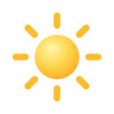

O irisTV precisa estar conectado à internet para abrir. Escolha uma rede Wi-Fi abaixo e conecte-se para continuar.
Uma experiência cinematográfica desenhada especialmente para a sua sala.

Séries, filmes e documentários para assistir a qualquer hora.
Escolha seu perfil do irisTV
Cole uma URL .m3u / .m3u8 ou carregue um arquivo M3U do seu Mac para trocar de canais pelos números.